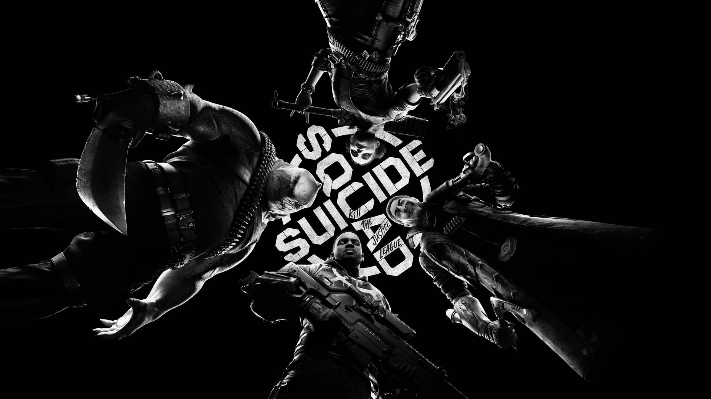
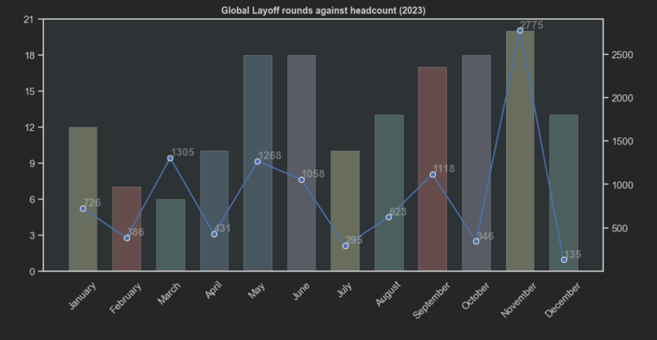
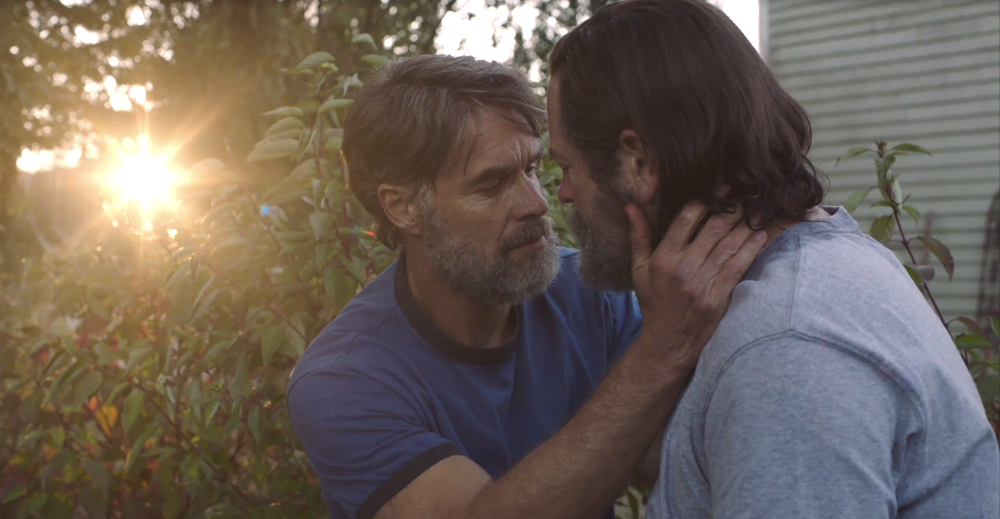
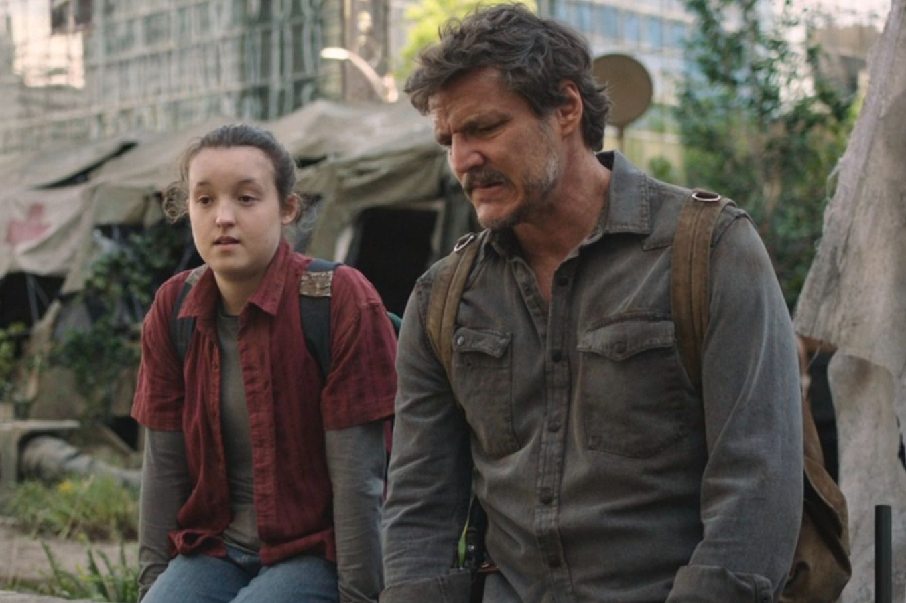
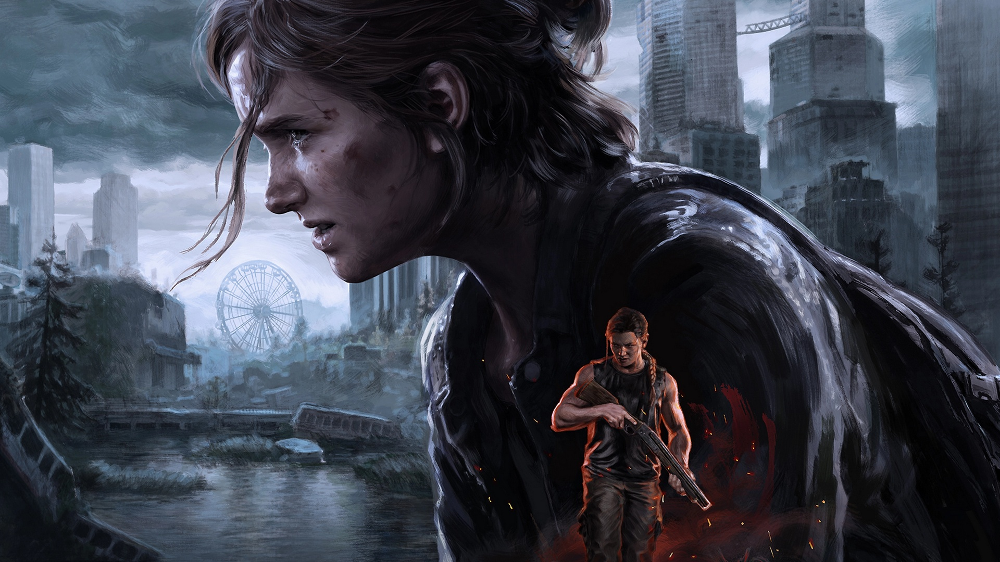

06.02.2024 в 15:00
 Suicide Squad: Kill the Justice League. Неужели на самом деле все так плохо?23.01.2024 в 09:19
 Лидеры игровой индустрии готовятся к «двум годам страданий»17.01.2024 в 10:00
Самые ожидаемые игры 2024 года16.01.2024 в 18:13
S.T.A.L.K.E.R. 2 выйдет 5 сентября 2024 года. Заявление GSC Game World о переносе релиза игры12.01.2024 в 14:47
Google меняет политику Play Store — чтобы добавить больше игр на реальные деньги (с комиссией за обслуживание)11.01.2024 в 16:05
Convai и Nvidia «оживляют» NPC в играх с помощью искусственного интеллекта — с реалистичными диалогами, анимацией и действиями10.01.2024 в 12:25
10.01.2024 в 10:31
Новые мониторы Gigabyte: как функция KVM позволяет работать с ноутбуком и ПК одновременно09.01.2024 в 15:07
 Авторы адаптации The Last of Us предлагали HBO снять спин-офф о Билле и Фрэнке08.01.2024 в 10:30
ATX эстетика года: собираем с нуля белоснежный игровой компьютер от MSI07.01.2024 в 18:54
 Сериал The Last of Us получил 8 наград «Эмми»05.01.2024 в 16:00
 Самые интересные новые игры января 2024 года26.12.2023 в 12:29
Китай ослабил ограничения по играм — после того, как Tencent и NetEase потеряли $80 млрд22.12.2023 в 12:29
Джеймс Ван работает над экранизацией хоррор-рассказа «Зов Ктулху» Говарда Лавкрафта22.12.2023 в 11:34